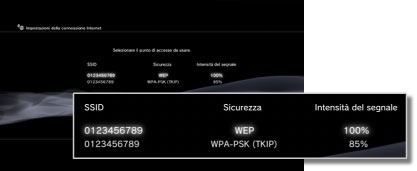
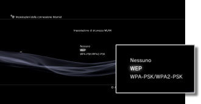
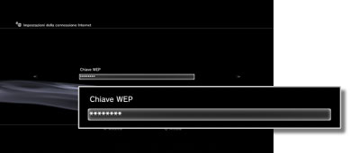

Impostazioni della connessione Internet (connessione wireless)
Questa impostazione è disponibile solo nei sistemi PS3™ che sono dotati della funzione WLAN.
È possibile impostare il metodo per la connessione a Internet. Le impostazioni della connessione Internet variano in base all'ambiente di rete e ai dispositivi utilizzati. La seguente procedura descrive una configurazione tipica quando si effettua la connessione a Internet senza cavi.
1. |
Verificare che le impostazioni relative al punto di accesso siano state completate.
Verificare la presenza di un punto di accesso collegato alla rete con servizio Internet vicino al sistema. Le impostazioni relative al punto di accesso sono generalmente impostate mediante un PC. Per maggiori dettagli, contattare la persona che ha effettuato la configurazione o si occupa della manutenzione del punto di accesso.
|
2. |
Confermare che al sistema PS3™ non sia collegato un cavo Ethernet.
|
3. |
Selezionare  (Impostazioni) > (Impostazioni) >  (Impostazioni di rete). (Impostazioni di rete).
|
4. |
Selezionare [Impostazioni della connessione Internet].
Selezionare [Sì] quando viene visualizzata una schermata di conferma che comunica la disconnessione da Internet.
|
5. |
Selezionare [Tipiche].
|
6. |
Selezionare [Wireless].

|
7. |
Selezionare [Scandisci].
Viene visualizzato un elenco dei punti di accesso nel raggio del sistema PS3™.
In base al modello di sistema PS3™ utilizzato, potrebbe essere disponibile l'opzione [Automatiche]. Selezionare [Automatiche] quando si utilizza un punto di accesso che supporta la configurazione automatica. Seguendo le istruzioni sullo schermo, le impostazioni necessarie saranno completate automaticamente. Per informazioni sui punti di accesso che supportano la configurazione automatica, rivolgersi al rivenditore locale.
|
8. |
Selezionare i punti di accesso che saranno utilizzati.
Un "SSID" è un nome identificativo assegnato ai punti di accesso. Se non si conosce il SSID da utilizzare o il SSID non è visualizzato, contattare la persona che ha effettuato la configurazione o si occupa della manutenzione del punto di accesso per ottenere assistenza.

|
9. |
Controllare il SSID per il punto di accesso.
|
10. |
Selezionare le impostazioni di sicurezza che saranno utilizzate.
I tipi di impostazioni di sicurezza variano in funzione del punto di accesso. Rivolgersi alla persona che ha effettuato la configurazione o si occupa della manutenzione del punto di accesso per sapere quale impostazione selezionare.

|
11. |
Inserire la chiave crittografica.
La chiave di crittografia viene visualizzata come [*]. Se non si conosce la chiave crittografica, rivolgersi alla persona che ha effettuato la configurazione o si occupa della manutenzione del punto di accesso per ottenere assistenza.

Dopo aver completato l'inserimento della chiave crittografica ed aver confermato la configurazione di rete, viene visualizzato un elenco di impostazioni.
A seconda dell'ambiente di rete utilizzato, potrebbero essere necessarie delle impostazioni aggiuntive, ad esempio per PPPoE, server proxy o indirizzo IP.
Per dettagli su queste impostazioni, consultare le informazioni fornite dal provider di servizi Internet oppure le istruzioni fornite con il dispositivo di rete.
|
12. |
Salvare le impostazioni.
|
13. |
Provare il collegamento.
Se si seleziona [Verifica connessione], il sistema tenterà di collegarsi a Internet.
|
14. |
Verificare i risultati del test di collegamento.
Se il collegamento è riuscito, verranno visualizzate informazioni sulla rete.
|
Note
- Se il collegamento non riesce, seguire le istruzioni sullo schermo per controllare le impostazioni. Vedere anche le informazioni fornite dal provider di servizi Internet e le istruzioni fornite con il dispositivo di rete in uso.
- Se la connessione viene verificata subito dopo aver selezionato [Automatico] > [AOSS™] nel punto 7, le impostazioni del router potrebbero non essere complete, comportando un errore di connessione. Attendere circa 1 o 2 minuti prima di verificare la connessione.